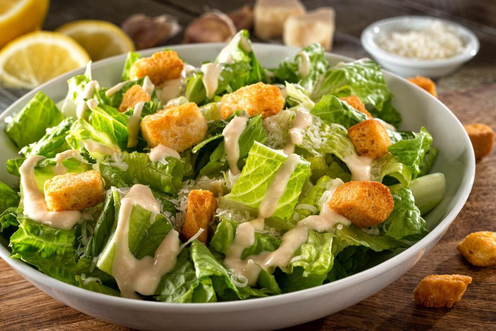

Caesar Salad
Home

Description
Caesar salad is a classic dish made with crisp romaine lettuce, crunchy croutons, and a tangy dressing of egg, parmesan, lemon juice,
anchovies, and garlic. It's often topped with more Parmesan and black pepper, and sometimes served with grilled chicken.
Ingredients
- Romaine lettuce
- Croutons
- Parmesan cheese (shaved or grated)
- Egg yolk (or whole egg, coddled)
- Garlic
- Lemon juice
- Anchovy fillets or paste
- Olive oil
- Black pepper
- Salt
- Make the dressing - Blend egg yolk, anchovies, garlic and lemon juice. Slowly whisk in olive oil until creamy.
Add grated Parmesan, salt, and pepper.
- Prep the lettuce - Wash and dry romaine leaves, then tear into pieces.
- Toast croutons - Toast bread cubes in olive oil until golden and crisp.
- Assemble and serve - Toss lettuce with dressing, add croutons, and top with shaved Parmesan, serve.